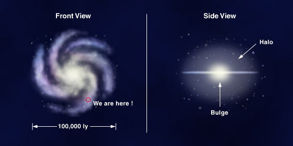
At the center is the nuclear bulge (with possibly a bar) with radius of about 20,000 ly. The disk and the bulge are surrounded by the galactic halo, which is spherical and even larger than the galactic disk. The halo consists of old stars, some in the globular clusters, and interstellar matter.
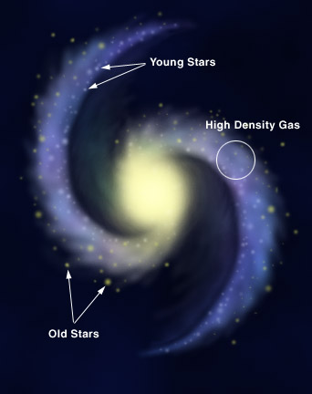
Another prominent feature of the Milky Way Galaxy is the spiral arms. They consist of young stars extending from the center to the edge of the disk. However, the laws of mechanics do not allow them to exist at all. Because stars near the edge will orbit in speeds much slower than stars near the center, even if the galaxy starts with spiral arms, they will tangle up pretty quickly and no clearly visible arms will be able to survive, as shown in the left hand side of this Youtube simulation.
The mostly accepted theory of the spiral arms is the density wave
theory. It says that the stars indeed orbit at different
speeds, but the density of the interstellar medium form a wave.
At the wave front, where the density is higher, star formation is
enhanced. That is why we find young stars along the spiral arms and
old stars elsewhere. Among the young stars are the short life,
heavy stars. They are very bright and catch our eyes. They will die soon
and so, they cannot travel far from their birthplaces. As a result,
the high density regions of the density wave are the spiral
arms.
Our Sun is on the Orion spiral arm, about two-third from the center. It is difficult to detect the spiral arms in our galaxy because 1) we are inside the galaxy and 2) the gas and dust, which form dust lanes, block our view. In order to trace out the spiral arms, we could search for the hydrogen, which is abundant in the spiral arms. Interstellar hydrogen will emit a characteristic wave with wavelength 21cm. Most of the sources of this wave are gas clouds in the spiral arms. Second to the 21cm emission, the radio wave emitted by the molecular gas clouds in the arms are also good spiral arm tracers.
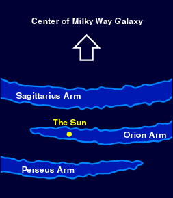
When viewed from the Earth, our galaxy appears to be a band of stars around us. The stars in the Milky Way are so many and so dense that our ancestors thought it was some kind of river. The center of our galaxy is located in the direction of Sagittarius, which is a summer constellation. Thus, the Milky Way is more spectacular in the summer. To see the Milky Way to its full beauty, one has to go to a dark site, far away from the city light. When you see the Milky Way, also look for the dust lanes, which block the stars further away.
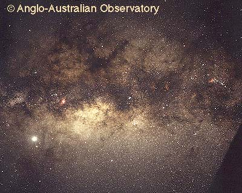 |
| (C) Anglo-Australian Observatory and Photograph by David Malin. |
Apart from the visible elements, we believe that our galaxy also contains some objects that do not emit any light. We call them dark matter. They reveal their existence by their gravity. How fast an object revolves depends on how much matter inside its orbit. If all the matters are visible, the orbital velocities of stars, say, near the edge of our galaxy will follow the red line below. However, we discovered that they are moving faster than expected, hence there must be more matters than we have seen to provide the stronger than expected gravitational attractive force to support the higher speed. We believe dark matter is in fact, everywhere, not just in our galaxy, but we do not understand its nature yet.
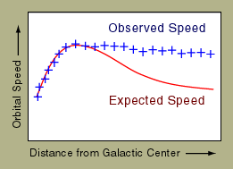
Another evidence of the existence of dark matter is the gravitational lensing effect. Because mass (no matter bright or dark) can bend light, if, by coincident, a galaxy is right behind another galaxy from our point of view, the image of the far away galaxy will be a ring. The angular size of the ring will give us clues on the total mass of the galaxy in the middle. By comparing with the mass of the bright matter visible, we could deduce the amount of dark matter in the middle galaxy. In practice, the alignment will never be perfect, the image will be some arcs, like the figure in below right.
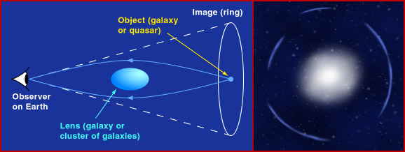
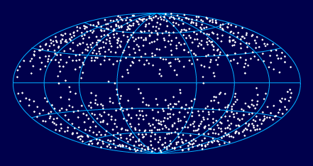
In this graph, the galactic plane is horizontal and we ignore the distances. Note that the gas and dust in our galaxy not only block the stars in our galaxy, but also the galaxies far away. Taking this into consideration, the distribution of the galaxies is fairly uniform.
What do the other galaxies look like? Galaxies come with many sizes and shapes. They are classified into three types: the elliptical, the spiral and the "none of the above" irregular.
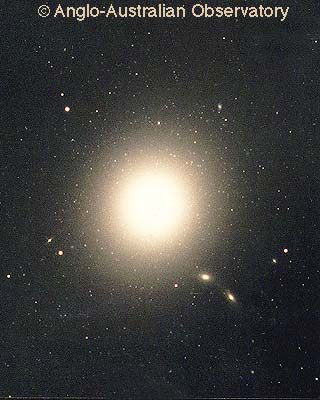 |
| (C) Anglo-Australian Observatory and Photograph by David Malin. |
Elliptical galaxies: The galaxy in the photo is M87, a typical elliptical galaxy. They usually consist of old stars. Some dwarf ellipticals have as few as 10 million stars, and make them not much different from a large globular cluster.
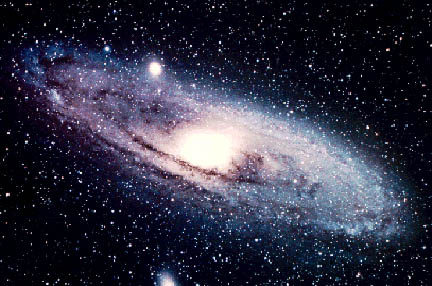 |
| Courtesy NASA. |
Spiral galaxies: Spiral galaxies contain both young and old stars. In general, they are brighter than elliptical galaxies. Spirals are sub-divided into two classes: the normal spiral and the barred spiral. The bulge of the barred spiral is elongated like a bar, thus given the name. The galaxy above is M31, a normal spiral only 2,000,000 ly away. Photo below shows a barred spiral. There is evidence that the Milky Way Galaxy is also a barred spiral.
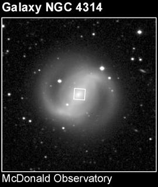 |
| Courtesy STScI. |
Irregular galaxies: They have irregular shape. We believe that they are the most common type of galaxies. The two irregular galaxies Large Magellanic Cloud and the Small Magellanic Cloud are two satellite galaxies of ours. They are visible by naked eyes, but not visible from Hong Kong.
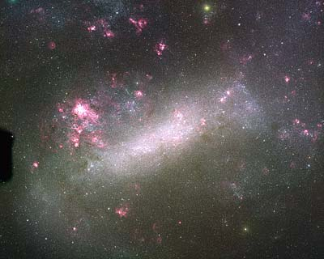 |
|
(C) Anglo-Australian
Observatory/Royal Observatory, Edinburgh and Photograph from UK Schmidt plates by David Malin. |
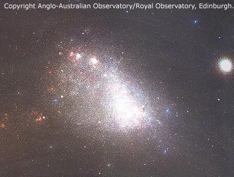 |
|
(C) Anglo-Australian
Observatory/Royal Observatory, Edinburgh and Photograph from UK Schmidt plates by David Malin. |
There are sub-classes for the elliptical and spiral galaxies. They are summarized in the following figure that was first worked out by Hubble. Note that this graph is not an evolution track for galaxies, which we do not know much about at the moment.
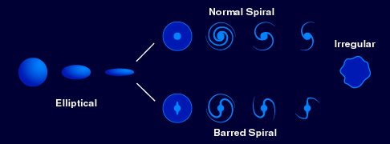
The second one is the Type Ia supernovae. Recall that a white dwarf-red giant binary system will go nova periodically. (See Chapter 15.) The white dwarf will gain mass from the red giant. Eventually, the white dwarf will be so heavy that the electron degenerate pressure is not strong enough to support the star. Astronomers can calculate that this happens when the white dwarf is of 1.4 solar masses. The white dwarf will further collapse and the binary system will brighten up. This is Type Ia supernova. We could distinguish the type of a supernova by its spectrum and light curve.
Because the white dwarfs will have the same mass, the luminosities of Type Ia supernovae are about the same. Therefore, we can compute the distance to a galaxy by measuring the apparent brightness of a Type Ia supernova in that galaxy, if we can find one.
Cepheid variables are dimmer than the Type Ia supernova. As a result, the supernova allows us to measure the distances of galaxies further away, but it happens much less often. Each one has its advantages and disadvantages. Both of them are called the distance indicators.
When galaxies collide, the stars never collide with each other. Just the distribution of the stars are distorted by the mutual gravity. Streams of stars may be ejected out to form something like antennae and the two galaxies will merge together. Some galaxies with multiple nuclei may be the end result of the merging of two galaxies long time ago. Galaxy collision will also trigger star births.
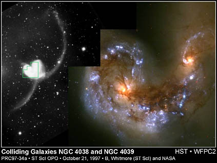 |
| Courtesy STScI. |
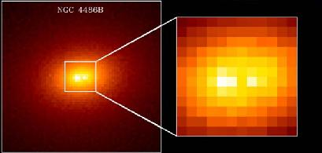 |
| Courtesy STScI. |
Galaxy collision may also lead to the formation of an active galaxy. An active galaxy is a galaxy that radiates unusual large amount of energy in the form of infrared, ultraviolet and X-rays; always from the nucleus of the galaxy. So, it is also termed the active galactic nuclei (AGN). We are not completely sure how an active galaxy is formed and how it generates such a large amount of energy. One of the most popular hypothesis is the supermassive black hole theory. When material surrounding the black hole is falling into it, large amount of energy is released before entering the event horizon. Galaxy collision may create the supermassive black hole at the center.
Another kind of interesting objects is quasar, which is the short form of the quasi-stellar object. When observed in visible light, they are small and dim, just like a star. However, near the infrared and radio, they are quite bright. Their spectra show large amount of redshift indicating that they are very far away from us (See Chapter 19.). Thus, we conclude that they radiate enormous amount of energy, even larger than those active galaxies nearby. Quasar is probably also the supermassive black hole at the center of a young galaxy.
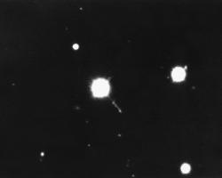 |
| Courtesy NOAO/NSF. |